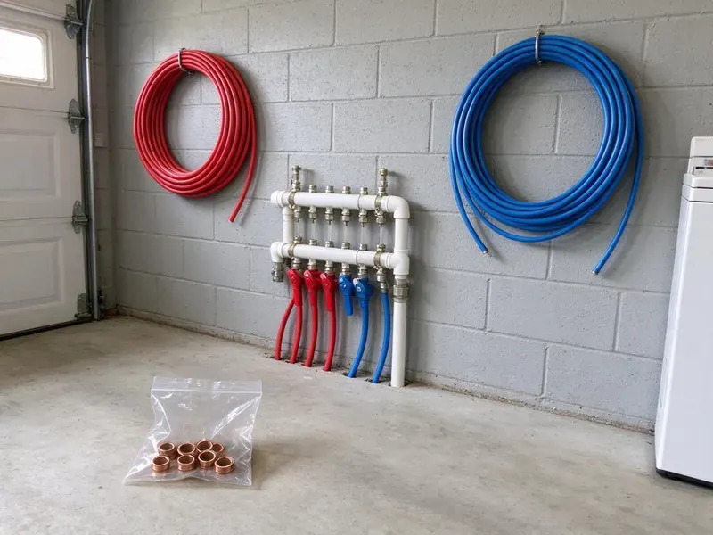

Tankless Water Heater Installation in Dunbar, WV
Switch to an energy-efficient tankless water heater in Dunbar, WV with professional installation from GJK Plumbing.
- Factory-Trained Installers
- Modern Hot Water Systems
- Quick, Efficient Installation
- Prompt, Reliable Installation
Ready for Endless Hot Water in Dunbar, WV?
We size the unit to your fixtures and incoming water temperature so you get consistent hot water year-round.
Expert Tankless Water Heater Installation for Dunbar, WV Families
When you choose GJK Plumbing for tankless water heater installation in Dunbar, you are investing in a long-term solution. Our team handles proper sizing and venting, which are crucial for the performance of your new, energy-efficient system.
Our expertise includes:
- Condensing and non-condensing gas tankless units with PVC or stainless vent pipe
- Code-compliant electrical and water line hookups.
- Gas line upsizing and meter capacity checks for high-BTU units

Additional Plumbing Installation Services in Dunbar, WV
We install water heaters, pumps, lines, and fixtures across Dunbar, WV with precision workmanship that meets every local code.


Customers
Why Choose GJK Plumbing for Tankless Water Heater Installation in Dunbar, WV?
Choosing GJK Plumbing for your tankless water heater installation means working with experienced professionals who understand West Virginia homes. We make sure every installation meets strict standards for safety and efficiency.
- Energy Savings, Tankless units only heat water as needed, which can significantly reduce your energy bills compared to traditional tank heaters.
- Longer Lifespan, Tankless water heaters usually last longer than conventional models, offering a better long-term investment.
- Energy Efficiency, Tankless units heat water only when needed, potentially lowering your utility bills compared to traditional storage tanks.
Citywide Coverage
GJK Plumbing serves every neighborhood of Dunbar, so no matter where you are located, our expert plumbers can reach you. We understand the plumbing needs throughout the Dunbar area and are always ready to help.
Experienced Team
Our team of licensed plumbers brings deep experience with tankless water heater installations in West Virginia homes. They are trained on current models and techniques, delivering a reliable and up-to-code setup for your property.
Safety-First Approach
Safety and code compliance come first on every tankless water heater installation we take on in Dunbar. Our plumbers carefully follow local West Virginia plumbing codes, from gas line connections to proper venting, preventing potential hazards.
Trusted Certified Dunbar Plumbing Services Professionals
At GJK Plumbing, we take pride in providing licensed, certified plumbing services throughout Dunbar, WV. Backed by recognized industry credentials, our experienced plumbers combine technical skill with genuine customer care. Whether it is repair, installation, or maintenance, we follow strict safety and quality standards to deliver lasting results you can trust.
Call Us Now PHCC Plumbing Contractor Recognition
PHCC Plumbing Contractor Recognition Better Business Bureau (BBB) Accreditation
Better Business Bureau (BBB) Accreditation Angi Certified Pro
Angi Certified Pro ISO 9001 Quality Management Certification
ISO 9001 Quality Management CertificationReliable Tankless Water Heater Installation Work in Dunbar, WV
Propane Tankless Water Heater Installation in Dunbar
Many homes outside natural gas service areas depend on propane. GJK Plumbing is experienced in installing propane tankless water heaters, which require specific gas line sizing, regulator adjustments and venting. We make sure your propane system is installed correctly for maximum efficiency and safety, providing reliable hot water for your Dunbar residence.

Commercial Tankless Water Heater Services in Dunbar, WV
Businesses in Dunbar benefit from the continuous hot water supply and compact design of commercial tankless water heaters. From restaurants to hair salons, we install heavy-duty systems designed to meet high-demand commercial needs. GJK Plumbing understands the requirements for commercial installations, including larger capacity units and commercial plumbing codes, so your business never runs out of hot water.
Navien Tankless Water Heater Installation in Dunbar
Navien is a leading brand known for its advanced condensing technology and strong energy efficiency. GJK Plumbing is skilled in the precise installation of Navien units in Dunbar homes, setting them up for the best savings and comfort. These sophisticated systems require expert setup to work at their best, and our team is proficient in all Navien models.
Rinnai, Navien and Noritz Installation in Dunbar, WV
We install leading tankless brands including Rinnai, Navien, Noritz and Rheem. Rinnai offers a wide model range and strong parts support, while Navien condensing units often include built-in recirculation pumps. Noritz is known for durable commercial-grade heat exchangers. We help you compare models by flow rate, efficiency and warranty.
Commercial Tankless Water Heater Installation in Dunbar
Businesses often have higher and more consistent hot water demands than homes. GJK Plumbing provides commercial tankless water heater installation, sizing systems to meet the needs of restaurants, salons or other commercial spaces. We understand the value of minimal disruption to your operations during installation, providing a quick and professional setup in Dunbar.
Electric Tankless Water Heater Installation in Dunbar, WV
Electric tankless water heaters are an excellent option for homes in Dunbar where natural gas is not available or preferred. These units are often smaller, simpler to vent and can be installed closer to the point of use. GJK Plumbing provides professional electrical sizing to make sure your home's panel can safely support a new electric tankless unit, offering consistent hot water without the need for a gas line.
Residential Tankless Water Heater Installation in Dunbar
GJK Plumbing specializes in installing tankless water heaters for residential properties. We assess your home's hot water demands, family size and existing utility connections to recommend the most suitable unit, so you get the right capacity for your needs. Our installations are designed to be energy efficient, providing endless hot water while often lowering your monthly utility bills in Dunbar.

Rinnai Tankless Water Heater Installation in Dunbar, WV
Rinnai tankless water heaters are a top choice for their reliability and long lifespan, making them a smart investment for homeowners across Dunbar, WV. Our plumbers are factory-trained on Rinnai systems, ensuring a clean installation that follows all manufacturer specifications. We make sure gas line sizing, venting and water connections are correct so your Rinnai unit provides endless hot water efficiently for years.
Tankless Water Heater Installation Near Me in Dunbar, WV
Our plumbers install tankless heaters in Dunbar regularly and know local permit and inspection requirements. We stock common models and parts to keep projects moving. You get a clean, professional installation and simple instructions on maintenance.
Our local presence means faster response times and a commitment to serving our neighbors in Dunbar. You can trust GJK Plumbing to provide prompt, professional and courteous service for all your tankless water heater needs, right in your neighborhood.
GJK Plumbing at a Glance
- Fully licensed plumbing team covering Dunbar, WV
- 24/7 emergency service with same-day scheduling
- Clear written estimates, no hidden fees
- 4.8-star rated by 832+ West Virginia customers
Dunbar Map
Dunbar Information
- Population
- 7,163
- Area codes
- Local
- Service area
- Dunbar and communities within 40 miles
- Nearby
- South Charleston, St. Albans, Nitro, Cross Lanes
Installing a tankless water heater in Dunbar, WV is a sound investment through warm and chilly seasons alike, delivering consistent hot water without the energy waste of heating a large tank all year.
Expert Services
Trust our professionals for reliable GJK Plumbing solutions in Dunbar, WV.
Our Specialized Plumbing Services in Dunbar, WV
At GJK Plumbing, we provide a complete range of plumbing services across Dunbar, WV. From leak detection to full system installations, our team ensures fast, precise, and affordable service for both residential and commercial properties. Explore our core services below:


How Our Tankless Water Heater Installation Process Works in Dunbar, WV
We aim for a hassle-free experience, making sure your new tankless system is installed correctly and safely for years of reliable hot water.
Request a Quote
Call (681) 223-3607 to schedule a site visit. We assess your fixtures, gas supply and venting options, then give you a written quote.
Install and Upgrade
We remove your old heater, upsize gas lines if needed and mount the new unit. Venting, water connections and isolation valves are installed to the manufacturer's specifications.
Test and Train
We fire the unit, check gas pressure and test hot water at several fixtures. Then we show you how to flush the system and register your warranty.
Frequently Asked Questions About Tankless Water Heater Installation in Dunbar
The cost for tankless water heater installation in Dunbar can range from $3,000 to $6,000, based on the unit type (gas or electric), brand, capacity and complexity of the installation, such as gas line upgrades or new venting. This price typically includes the unit and professional labor. We provide a detailed, no-obligation estimate after an on-site assessment.
With annual descaling, tankless units often last 15 to 20 years. Skipping maintenance in hard water areas can shorten that considerably.
Many manufacturers offer 10 to 15 year heat exchanger warranties and shorter coverage on parts. We also warranty our installation labor.
In West Virginia, plumbing and often gas or electrical permits are usually required for tankless water heater installation. GJK Plumbing handles all necessary permit applications and makes sure your installation passes all required inspections by local authorities.
While it may seem appealing, tankless water heater installation is complex and should only be performed by a licensed professional. It involves gas lines, high-voltage electricity, water connections and intricate venting systems, all of which require specialized knowledge and adherence to safety codes. Incorrect installation can be dangerous and cancel warranties.
A straight replacement takes four to six hours. Tank to tankless conversions with gas and venting changes usually take a full day.
To maintain efficiency and extend the lifespan of your tankless unit, annual flushing to remove mineral buildup is recommended, especially in areas with hard water. Checking and cleaning the air filter (for gas models) and inspecting connections are also part of routine maintenance. GJK Plumbing offers comprehensive maintenance services.
Signs you might need a new water heater, tankless or otherwise, include a lack of hot water, rust-colored water, strange noises from the unit or frequent leaks. For tankless systems in particular, frequent error codes or a significant drop in hot water flow could point to a need for service or replacement.
What People Are Saying About Our Plumbing Experts?

Laura S.
I scheduled a water heater replacement, and the team made the process smooth and affordable. The new unit works perfectly, and they cleaned up after completing the job.
Water Heater Replacement · Cross Lanes, WV
Daniel K.
A pipe burst at 11 pm and they actually answered. The plumber showed up within the hour, shut everything down, and had us back to normal the next morning. Could not ask for more.
Emergency Plumbing · Cross Lanes, WV
Patricia H.
We had a slab leak that two other companies could not find. GJK Plumbing located it in under an hour, explained our options, and the price matched the quote to the dollar.
Slab Leak Repair · Charleston, WV
James P.
Our commercial plumbing system had a leak under the sink, and GJK Plumbing handled it professionally. The plumbers arrived quickly and restored everything without disruption to our customers.
Commercial Plumbing · South Charleston, WVSofia M.
Two new toilets installed in one visit, no mess left behind, and the tech even adjusted a faucet he noticed was dripping. Fair pricing and really friendly.
Toilet Installation · Charleston, WVRobert G.
The trenchless sewer replacement saved our front yard. They walked us through the camera inspection footage first so we knew exactly what we were paying for.
Sewer Line Replacement · South Charleston, WV